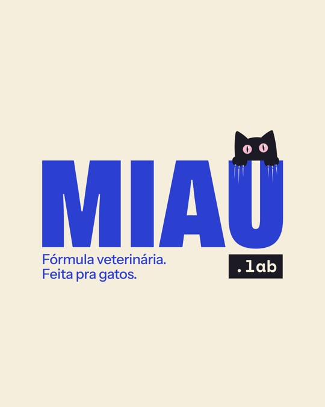
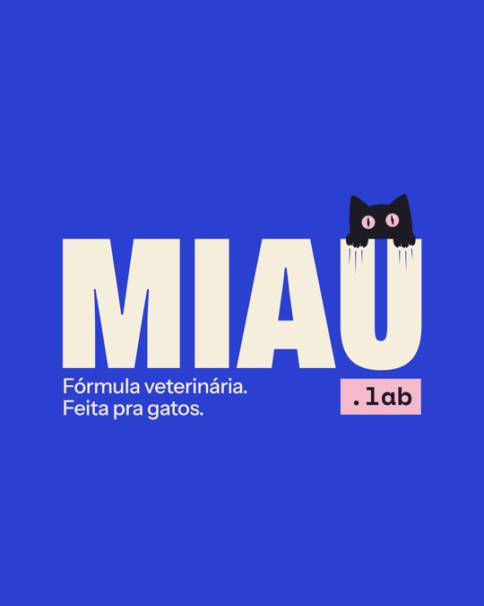
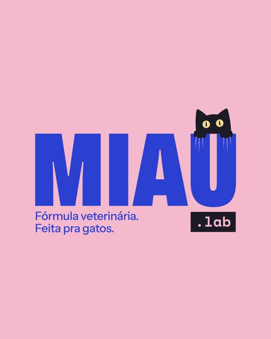
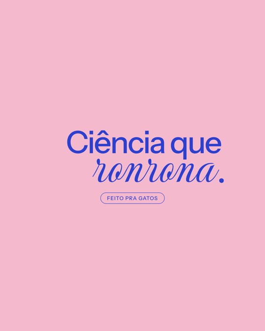
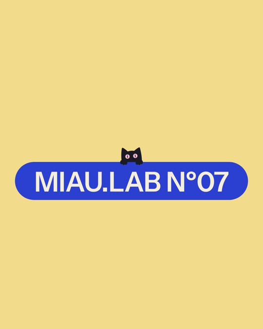

MIAU.LAB · sistema refinado

principal · creme

negativo · cobalto

variação · rosa leite

assinatura · Ciência que ronrona.

selo · cápsula com o gato espiando
cobalto
#2B3FD1
rosa leite
#F4B9CD
creme
#F6EEDC
manteiga
#F2DC8B
nanquim
#1C1A24
marca · Archivo Black condensada
MIAU
apoio · Instrument Sans
fórmula veterinária, feita pra gatos
acento · Mea Culpa (uma palavra por peça)
ronrona